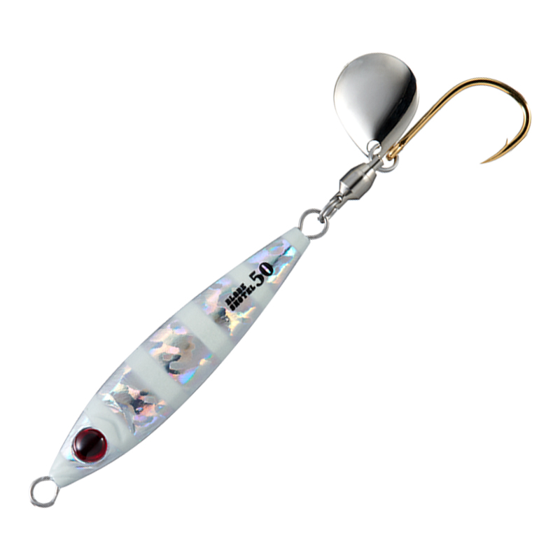
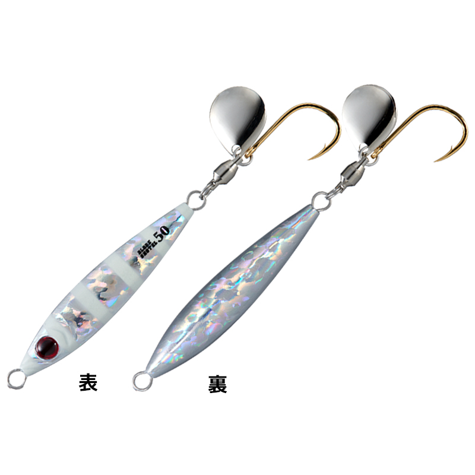
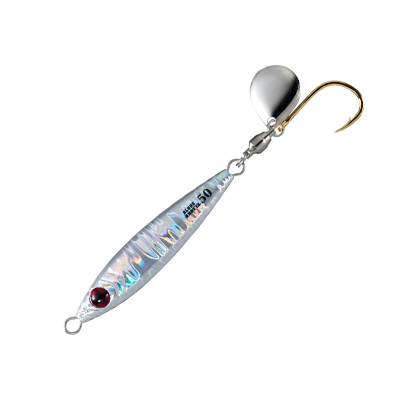
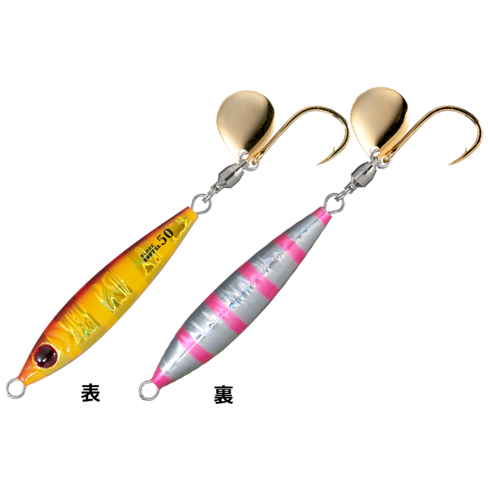
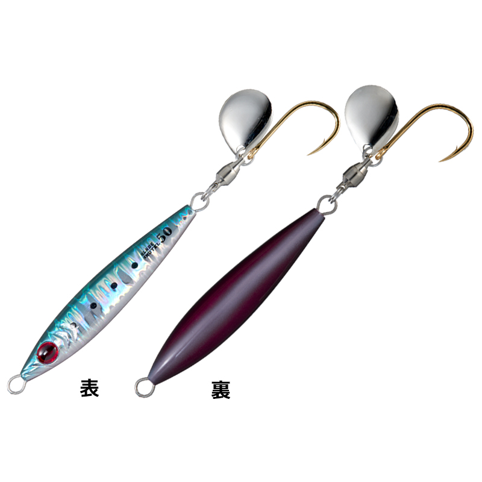
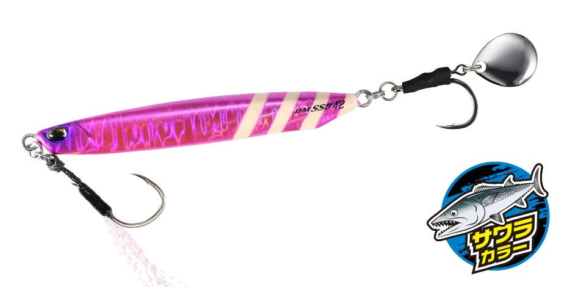

ブレードショーテル
（BLADE SHOTEL）
ブレードショーテルはSHOUT!（シャウト）のテイルブレードジグです。
サワラをメインターゲットにした、ブレードジギング専用のジグ。「シルエットは小さく、ウエイトは重く」という求められる性能を、極太ボディで実現しています。ブレードのキラメキと振動でサワラに強くアピールします。

画像出典:SHOUT!公式HP
スペック
- メーカー
- SHOUT!（シャウト）
- タイプ
- テイルブレードジグ（ブレードジギング専用）
- ウエイト
- 30g／40g／50g／60g／80g／100g／130g
- 品番
- 125BS〜131BS
- ターゲット
- サワラ・青物・マダイ
- 価格
- 1,100〜1,800円
▼今すぐチェック

ブレードショーテルの特徴
シルエットは小さく、ウエイトは重く。サワラのためのブレードジグ
-
高速巻きでも回りにくい極太ボディ
求められる性能を実現した極太ボディで、高速巻きでも回転しにくく、安定した姿勢を保ちます。
-
ブレードのキラメキと振動
テールのブレードが生むキラメキと振動で、サワラへのアピール力が抜群です。
-
青物やマダイも狙える
高速巻きだけでなく、ストップ＆ゴーやフォールを入れることで、青物やマダイもターゲットになります。
ブレードショーテルの使い方
基本はボートからのブレードジギング。着底させたら、高速巻きでブレードを回しながら引き上げます。
反応がないときはストップ＆ゴーやフォールを入れると、青物やマダイも狙えます。
ブレードショーテルの得意な状況
ボートからのサワラのブレードジギング。小さいシルエットが有効な状況で、水深や潮の速さに合わせて30〜130gから重さを選べます。
小さいシルエットが効く状況で、ボートからサワラがよく釣れるブレードジグです。
ワンポイント
小さいシルエットを優先して各部に小型パーツを使っているので、大型魚がかかったときはドラグの設定に注意しましょう。キャッチしたあとは、フックやスプリットリングに変形や不具合がないか確認するよう公式でも案内されています。
サワラ狙いならワイヤーリーダーも
サワラ・サゴシの鋭い歯でリーダーごとジグを切られないように、ジグの前に30cm以内の短いワイヤーリーダーを付けておくと安心です。カッターが少ない日は外して、状況に合わせて使い分けましょう。くわしくはサワラのブレードジギング完全ガイドで紹介しています。

ブレードショーテルの重さの選び方（30g〜130g）
ブレードショーテルは、30g・40g・50g・60g・80g・100g・130gの7サイズがあります。ボートのブレードジギングでは、底がしっかり取れる、できるだけ軽い重さを選ぶのが基本です。
水深が浅く潮の緩い日は30〜50g、もっとも出番の多い標準は60〜80g前後、水深がある場所や潮の速い日、二枚潮の日は100〜130gが目安です。軽いほど巻き上げが速くなり、ブレードもよく回ります。
乗合船では、船長から重さの指示が出ることもあります。指示の重さを基準に、底が取りにくければ1段重く、取りやすければ1段軽くして、周りの人とオマツリしないように調整しましょう。
サワラ向けブレード系ジグの使い分け
| モデル | 全長／自重 | 得意な場面 |
|---|---|---|
| ブレードショーテル | 30〜130g（7サイズ） | ボートのブレードジギング専用。極太ボディで高速巻きでも回りにくい（本記事のモデル） |
| ドラッグメタル キャスト SSブレード | 28・42・55・80g | スーパースリムボディで飛距離。投げて巻くだけのショアジギング向け |
| メタルマジックスリム | 30・40・50・60g | スリムロングボディのスピンテールジグ。やや大きめのベイトに |
| メタルマジックTG | 20〜60g | タングステンの極小シルエット。マイクロベイトパターンに |
同じブレード系でも、ボートで縦に使うか、ショアから投げて巻くか、ベイトの大きさで選ぶルアーが変わります。釣り方とベイトに合わせて使い分けましょう。
人気カラー
公式ラインナップから4色を紹介します（画像は30g〈125BS〉のもの）。

ゼブラグローゼブラ柄のグローカラー。光量の少ない時間帯や深場に。

ボーダーホロホロのフラッシングで見せるカラー。

レッドゴールドピンクゼブラゴールドとピンクゼブラのアピールカラー。

イワシスクイッドイワシを意識したナチュラル系。
画像出典:SHOUT!公式HP
▼今すぐチェック
ブレードショーテルに似ているルアー
-

ドラッグメタル キャスト SSブレード DUO 詳細はこちら＞スーパースリムボディのスイミングブレードジグ。ショアから投げて巻くだけで広く探れる。
-
 メタルマジックスリム
AQUAWAVE
詳細はこちら＞
メタルマジックスリム
AQUAWAVE
詳細はこちら＞
スリムロングボディのスピンテールジグ。少し大きめのベイトパターンに。
-
 Zブレード
ジーク
詳細はこちら＞
Zブレード
ジーク
詳細はこちら＞
ブレード付きのメタルジグ。ブレードのフラッシングで誘う、同じジャンルの1本として。